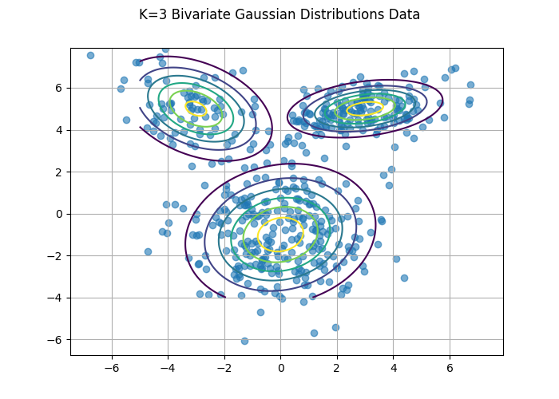
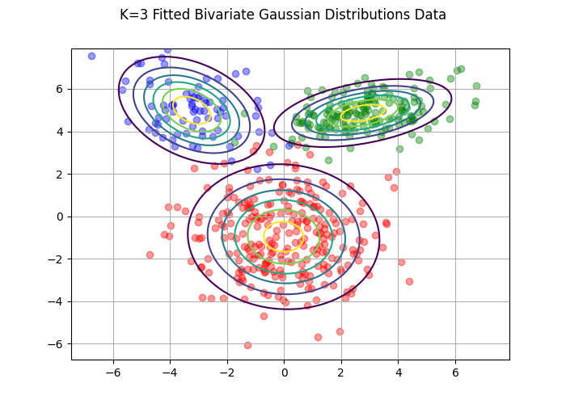

In my previous post, we extended our Gibbs Sampler to handle any number of \(K\) Components and fit our model in the case where \(K=4\). We can now move on and extend our model to handle the Multivariate case. I stick to demonstrating the model on the bivariate case for simplicity and to better enable visualization of the results.
The K-Component Bivariate is defined exactly like the univariate case, \(p(x|\theta) = \sum_{j=1}^K\pi_j\phi_{\theta_j}(x)\) except that \(\phi_{\theta_j}(x)\) is defined by the multivariate Gaussian distribution:
\[ \begin{align*} \phi_{\theta_j}(x) & = \frac{1}{\sqrt{2\pi\left|\Sigma_j\right|}}\exp^{\frac{1}{2}(x-\pmb{\mu_j})^T\Sigma^{-1}(x-\pmb{\mu_j})} \end{align*} \]
We can generate our data using a similar method as before, except we extend \(\pmb{\mu_j}\) to the vector \(\pmb{\pmb{\mu_j}}\) and \(\sigma_j\) becomes the covariance matrix \(\Sigma_j\).
import numpy as np
from numpy.random import binomial, normal, beta, multinomial
from scipy.stats import invwishart, norm, dirichlet, multivariate_normal
import matplotlib.pyplot as plt
from matplotlib.lines import Line2D
import math
import seaborn as sns
import pandas as pd
def data_gen(mu, cov, phi, n):
"""
Generates samples from Mixture of K Multivariate Gaussian Distributions
"""
y = np.empty((n, 2))
for i in range(n):
ind = multinomial(1, phi)
for j, val in enumerate(ind):
if val == 1:
y[i,:] = np.random.multivariate_normal(mu[j,:], cov[j,:,:])
else:
next
return np.array(y)
# Define parameters for K=3 Mixture of Multivariate Gaussians
phi = [.3, .5, .2]
mu = np.array([[3,5], [0,-1], [-3,5]])
cov_1 = np.array([[2.0, 0.3], [0.3, 0.5]])
cov_2 = np.array([[3.0,.4], [.4,3.0]])
cov_3 = np.array([[2,-.7], [-.7,1.7]])
cov = np.stack((cov_1, cov_2, cov_3), axis = 0)
data = data_gen(mu, cov, phi, 500)
x, y = np.mgrid[-5:8:.1, -4:8:.1]
pos = np.dstack((x,y))
fig, ax = plt.subplots()
ax.scatter(data[:,0], data[:,1], alpha = .6)
for i in range(len(mu)):
ax.contour(x,y, multivariate_normal(mu[i,:], cov[i,:,:]).pdf(pos), extend='both')## <matplotlib.contour.QuadContourSet object at 0x7fa909000310>
## <matplotlib.contour.QuadContourSet object at 0x7fa9090be190>
## <matplotlib.contour.QuadContourSet object at 0x7fa90909be80>fig.suptitle("K=3 Bivariate Gaussian Distributions Data")
ax.grid()
fig.savefig("k3.png")
Extending our model to the multivariate case requires changes in our prior and posterior distributions. Our new prior distributions for \(\pmb{\pmb{\mu_j}}\) and \(\Sigma_j\) are extensions of the univariate Inverse-Gamma and Normal distributions. We can define the joint prior over \(p(\pmb{\pmb{\mu_j}}, \Sigma_j)\) by the Normal-Inverse-Wishart Distribution which is conjugate to the multivariate Normal. As with our other models, we assume independence between \(\pmb{\pmb{\mu_j}}\) and \(\Sigma_j\).
\[ \begin{align*} p(\Sigma_j) & \sim W^{-1}(v_o, \Lambda_o)\\ p(\pmb{\mu_j}|\Sigma_j) & \sim N(\pmb{\xi_o}, \frac{\Sigma_j}{\kappa_o})\\ p(\pmb{\mu_j}, \Sigma_j) & \sim NIW(\pmb{\xi_o}, \kappa_o, \Lambda_o, v_o)\\ & \propto \left|\Sigma_j\right|^{-\frac{v_o + d}{2}-1}\exp\left(-\frac{1}{2}tr(\Lambda_o\Sigma_j^{-1})- \frac{\kappa_o}{2}(\pmb{\mu_j} - \pmb{\xi_o})^T\Sigma_j^{-1}(\pmb{\mu_j} - \pmb{\xi_o})\right) \end{align*} \] Kamper (2013)
We know from our last post that
\[ \begin{align*} p(\theta|x,z) \propto p(x, z| \theta)p(\pmb{\pi})\prod_{j=1}^k\left[p(\pmb{\mu_j})p(\Sigma_j)\right] \end{align*} \]
and because of independence we can rewrite this as:
\[ \begin{align*} p(\theta|x,z) \propto p(x, z| \theta)p(\pmb{\pi})\prod_{j=1}^k\left[p(\pmb{\mu_j}, \Sigma_j)\right] \end{align*} \]
which leads to the conditional density
\[ \begin{align*} p(\pmb{\mu_j}, \Sigma_j | z, x, \pi) & \propto \prod_{i=1}^N\phi_{\theta_j}(\pmb{x_i})^{z_j}\left|\Sigma_j\right|^{-\frac{v_o + d}{2}-1}\exp\left(-\frac{1}{2}\text{tr}(\Lambda_o\Sigma_j^{-1})- \frac{\kappa_o}{2}(\pmb{\mu_j} - \pmb{\xi_o})^T\Sigma_j^{-1}(\pmb{\mu_j} - \pmb{\xi_o})\right)\\ & \propto \prod_{i=1}^N\left|\Sigma_j\right|^{-\frac{1}{2}}\exp\left(-\frac{1}{2}(\pmb{x_i}-\pmb{\mu_j})^T\Sigma_j^{-1}(\pmb{x_i}-\pmb{\mu_j})\right)\left|\Sigma_j\right|^{-\frac{v_o + d}{2}-1}\exp\left(-\frac{1}{2}\text{tr}(\Lambda_o\Sigma_j^{-1})- \frac{\kappa_o}{2}(\pmb{\mu_j} - \pmb{\xi_o})^T\Sigma_j^{-1}(\pmb{\mu_j} - \pmb{\xi_o})\right)\\ & \propto \left|\Sigma_j\right|^{-\frac{d+v_o+n_j}{2}-1}\exp\left(-\frac{1}{2}\sum_{i=1}^N(\pmb{x_i}-\pmb{\mu_j})^T\Sigma_j^{-1}(\pmb{x_i}-\pmb{\mu_j}) - \frac{\kappa_o}{2}(\pmb{\mu_j} - \pmb{\xi_o})^T\Sigma_j^{-1}(\pmb{\mu_j} - \pmb{\xi_o}) - \frac{1}{2}\text{tr}(\Lambda_o\Sigma_j^{-1})\right)\\ \end{align*} \]
Now we can condition on \(\pmb{\mu_j}\) to get our first complete conditional. The terms in red can be absorbed into a constant term due to conditioning.
\[ \begin{align*} p(\pmb{\mu_j} | \Sigma_j, z, x, \pi) & \propto \exp \left(-\frac{1}{2}\left[\sum_{i=1}^N \color{red}{z_{ij}\pmb{x_i}^T\Sigma_j^{-1}\pmb{x_i}} - z_{ij}2\pmb{x_i}^T\Sigma_j^{-1}\pmb{\mu_j} + z_{ij}\pmb{\mu_j}^T\Sigma_j^{-1}\pmb{\mu_j}\right] - \frac{\kappa_o}{2}\left[\pmb{\mu_j}^T\Sigma_j^{-1}\pmb{\mu_j} - 2\pmb{\mu_j}^T\Sigma_j^{-1}\pmb{\xi_o} + \color{red}{\pmb{\xi_o}^T\Sigma_j^{-1}\pmb{\xi_o}}\right]\right)\\ & \propto \exp \left(-\frac{1}{2}\left[(n_j+\kappa_o)\pmb{\mu_j}^T\Sigma_j^{-1}\pmb{\mu_j} + 2\sum_{i=1}^Nz_{ij}\pmb{x_i}^T\Sigma_j^{-1}\pmb{\mu_j} + 2\kappa_o\pmb{\mu_j}^T\Sigma_j^{-1}\pmb{\xi_o}\right]\right)\\ & \propto \exp \left(-\frac{1}{2}\left[(n_j+\kappa_o)\pmb{\mu_j}^T\Sigma_j^{-1}\pmb{\mu_j} + 2(n_j\pmb{\bar{x}} - \kappa_o\pmb{\xi_o})\Sigma_j^{-1}\pmb{\mu_j}\right]\right)\\ & \propto \exp \left(-\frac{n_j+\kappa_o}{2}\left(\pmb{\mu_j} - \frac{n_j\pmb{\bar{x}} + \kappa_o\pmb{\xi_o}}{n_j + \kappa_o}\right)^T\Sigma_j^{-1}\left(\pmb{\mu_j} - \frac{n_j\pmb{\bar{x}} + \kappa_o\pmb{\xi_o}}{n_j + \kappa_o}\right)\right)\\ p(\pmb{\mu_j} | \Sigma_j, z, x, \pi) & \sim N\left(\frac{n_j\pmb{\bar{x}} + \kappa_o\pmb{\xi_o}}{n_j + \kappa_o}, \frac{\Sigma_j}{n_j+\kappa_o}\right) \end{align*} \]
It’s worth noting that mean of the update for \(\pmb{\mu_j}\) is a weighted average of the prior mean \(\pmb{\xi_o}\) and the sample mean \(\pmb{\bar{x}}\). The less data we have in component \(j\) the more weight is put on the prior Murphy (2012). We choose our prior such that \(\pmb{\xi_o} = \pmb{0}\) and \(\kappa_o = 0\) to give the following update function:
def update_mu(data, z_mat, cov):
"""
Sample from Posterior Conditional for mu
"""
mu = []
n_j = np.sum(z_mat, axis=0)
for j in range(len(cov)):
cov_o = cov[j] / n_j[j]
x_bar = data[z_mat[:,j] == 1, :].mean(axis=0)
sample = multivariate_normal(x_bar, cov_o).rvs()
mu.append(sample)
return muSimilarly we can condition on \(\Sigma_j\) to get our next complete conditional. Here its helpful to remember the “trace trick” where \(\pmb{x}^TA\pmb{x} = \text{tr}(\pmb{x}^TA\pmb{x}) = \text{tr}(A\pmb{x}\pmb{x}^T)\). We will also let \(S = \sum_{i=1}^Nz_{ij}(\pmb{x_i} - \pmb{\mu_j})(\pmb{x_i} - \pmb{\mu_j})^T\) and \(G = (\pmb{\mu_j} - \pmb{\xi_o})(\pmb{\mu_j} - \pmb{\xi_o})^T\)
\[ \begin{align*} p(\Sigma_j | \pmb{\mu_j}, z, x, \pi) & \propto \left|\Sigma_j\right|^{-\frac{n_j+d+v_o}{2}-1}\exp\left(-\frac{1}{2}\text{tr}(\Sigma_j^{-1}S) - \frac{1}{2}\text{tr}(\Lambda_o\Sigma_j^{-1}) - \frac{\kappa_o}{2}\text{tr}(\Sigma_j^{-1}G)\right)\\ & \propto \left|\Sigma_j\right|^{-\frac{n_j+d+v_o}{2}-1}\exp\left(-\frac{1}{2}\text{tr}\left(\Sigma_j^{-1}\left(\Lambda_o + S + \kappa_o G\right)\right)\right)\\ p(\Sigma_j | \pmb{\mu_j}, z, x, \pi) & \sim W^{-1}\left(n_j + v_o, \Lambda_o + \sum_{i=1}^Nz_{ij}(\pmb{x_i} - \pmb{\mu_j})(\pmb{x_i} - \pmb{\mu_j})^T + \kappa_o(\pmb{\mu_j} - \pmb{\xi_o})(\pmb{\mu_j} - \pmb{\xi_o})^T\right) \end{align*} \]
Here we choose our prior such that \(\Lambda_o = \pmb{I}\) giving the following update function for \(\Sigma_j\)
def update_cov(data, z_mat, mu):
"""
Sample from Posterior Conditional for sigma
"""
n_j = np.sum(z_mat, axis=0)
cov = []
for j in range(len(mu)):
y = data[z_mat[:,j] == 1, :]
y_bar = y.mean(axis=0)
s_squares = np.dot(np.transpose(y - mu[j]), y - mu[j])
cov.append(invwishart(n_j[j], s_squares + np.eye(2)).rvs())
return covThe rest of our code is the mostly same as in previous posts. The major differences deal with accounting for the new shapes of data along with our new multivariate distributions.
def update_pi(alpha_vec, z_mat):
"""
Sample from Posterior Conditional for pi
"""
n_j = np.sum(z_mat, axis=0)
assert len(n_j) == len(alpha_vec), "Number of distributions must equal number of parameters"
return dirichlet(n_j + alpha_vec).rvs()
def update_z(data, mu, cov, pi):
"""
Sample from latent variable Z according to likelihoods for class assignment
"""
a = np.empty((len(data), len(mu)))
out = np.empty((len(data), len(mu)))
for j in range(len(mu)):
a[:,j] = multivariate_normal(mu[j], cov[j]).pdf(data) * pi[0,j]
pi_i = a / np.sum(a, axis=1)[:,None]
for i in range(data.shape[0]):
out[i,] = multinomial(1, pi_i[i,:])
return out
def gibbs(data, iters, burnin, k):
"""
Run Gibb's Sampling for Mixture of k Bivariate Gaussians. Initial States are sampled from Priors
"""
# Set initial guesses based on priors
alpha = [1,1,1]
mu = []
cov = []
x, y = np.mgrid[-6:8:.1, -6:8:.1]
pos = np.dstack((x,y))
for i in range(k):
mu.append(multivariate_normal(np.zeros(2), np.eye(2)).rvs())
cov.append(invwishart(2, np.eye(2)).rvs())
pi = dirichlet(alpha).rvs()
pi_out = np.empty((iters, k))
mu_out = np.empty((iters, k, 2)) # Bivariate
cov_out = np.empty((iters, k, 2, 2)) # Bivariate
for i in range(iters):
# Update Parameters according to conditional posterior distributions
z_mat = update_z(data, mu, cov, pi)
pi = update_pi(alpha, z_mat)
cov = update_cov(data, z_mat, mu)
mu = update_mu(data, z_mat, cov)
# Store Values to monitor trace
pi_out[i, :] = pi
for j in range(k):
mu_out[i, j :] = mu[j]
cov_out[i, j, :, :] = cov[j]
return pi_out[burnin:, :], mu_out[burnin:,:,:], cov_out[burnin:,:,:,:], z_mat
pi, mu, cov, z_mat = gibbs(data, 2000, 500, 3)
mu_fitted = mu.mean(axis = 0)
pi_fitted = pi.mean(axis = 0)
cov_fitted = cov.mean(axis = 0)
x, y = np.mgrid[-6:8:.1, -6:8:.1]
pos = np.dstack((x,y))
fig, ax = plt.subplots()
cols = ["red", "green", "blue"]
for j, col in enumerate(cols):
ax.scatter(data[z_mat[:,j] == 1,0], data[z_mat[:,j] == 1,1], alpha = .4, color = col)
for i in range(3):
ax.contour(x,y,
multivariate_normal(mu_fitted[i,:],
cov_fitted[i,:,:]).pdf(pos),
extend='both')## <matplotlib.contour.QuadContourSet object at 0x7fa90b09cd30>
## <matplotlib.contour.QuadContourSet object at 0x7fa90b09ce20>
## <matplotlib.contour.QuadContourSet object at 0x7fa90b09cf10>fig.suptitle("K=3 Fitted Bivariate Gaussian Distributions Data")
ax.grid()
fig.savefig("fitted.png")
We can see above that our model fits the bivariate mixture very well. Because we have so many different parameters, I will skip over the trace plots which show convergence.